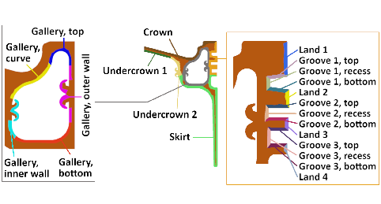
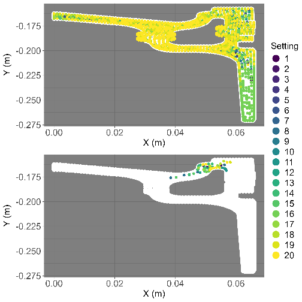
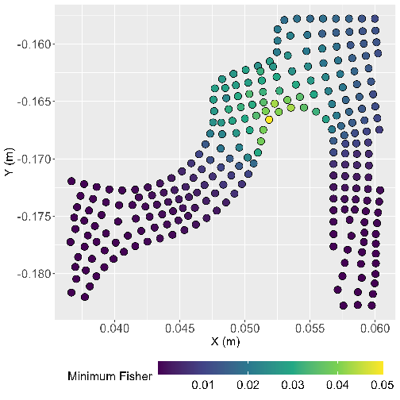

Progress Report
FA 3.22.8 Efficient Modeling and Guiding of Experimental Investigations for Pistons
Stephen Wright
August 2025
DRAFT
Overview
Review of Sensor Selection Methodology and Journal Paper
- Motivation Recap
- Methodology Description
- Application to 2D DD13 FE model
- Optimization Results
- Algorithm Validation Procedure and Results
Overview
Future Work Discussion
- Fatigue analysis of pistons
Motivation Recap
Improve FE modeling capabilities for pistons
To achieve
- Greater predictive accuracy
- Greater fidelity capabilities
- Reduced uncertainty in model
Motivation Recap
Improve FE modeling capabilities for piston
Model calibration aids with
- Validation of model parameters
- Assessing model predictive capabilites
- Quantification of model uncertainty
Motivation Recap
Improve FE modeling capabilities for piston
Current limitations
- High-fidelity modeling is limited to what can be validated (calibrated) with experimental data
- Calibration is limited by the information of experimental data
Motivation Recap
Improve FE modeling capabilities for piston
The goal is to develop a framework for identifying optimal measurement locations
- Better experimental data improves calibration capabilites
- Improved calibration gives space for higher fidelity modeling capabilites
Sensor Optimization Methodology
Key Components
- Digital engineering approach
- One-at-a-time strategy
- Two-stage optimization
Sensor Optimization Methodology
Digital engineering approach
- Does not rely on existing experimental data
- Only requires initial computer models of combustion and piston heat transfer
- Utilizes statistical approaches with synthetic data generated by the computer models
Sensor Optimization Methodology
One-at-a-time strategy
- Optimizes each sensor to a specific unknown calibration parameter (e.g., backside HTC)
- Reduces computational expense
- Avoids multiple optimums associated with Fisher information matrix determinant-based strategies
Sensor Optimization Methodology
Issue Consideration
Potential issues with digital engineering framework
- No reliance on existing experimental data means the models aren't yet validated
- One-at-a-time strategy does not account for each source of uncertainty concurrently
Sensor Optimization Methodology
Solution: consider multiple parameter conditions!
- Synthetic data is simulated from the model using a set of parameter values
Sensor Optimization Methodology
Solution: consider multiple parameter conditions!
- By using an array of different parameter configurations, bias can be prevented
Sensor Optimization Methodology
Solution: consider multiple parameter conditions!
- Multiple parameter configurations also accounts for concurrent uncertainty in the on-at-a-time approach
Sensor Optimization Methodology
Two-stage optimization strategy
- First stage optimization over an array of different parameter configurations
- Second stage robust optimization
Find the "best worst-case scenario"
Sensor Optimization Methodology
Optimization Criterion
Fisher information
\[
\begin{aligned}
O & = \mathcal{I}_{1,1} \\
\mathcal{I}_{1,1} & = \frac{-\partial^2 \log L}{{\partial \theta}^2} \\
\end{aligned}
\]
Sensor Optimization Methodology
First stage optimization
- Initialize an array of parameter settings
- Genetic algorithm optimization for each sensor at each parameter setting
- This gives an array of apprximate optimums
Sensor Optimization Methodology
Second stage optimization
- Define a region bounding the array of approximate optimums
- Direct evaluation of Fisher information at all parameter settings inside region
- Find best worst-case scenario
Application to 2D DD13 Model
- 2D slice of 3D piston CAD
- 0.7 mm element size at crown
- 2.5 mm element size at skirt
Application to 2D DD13 Model
- Crown boundary condition mapped from CFD simulation
- Backside boundary conditions are calibration parameters
Application to 2D DD13 Model

Application to 2D DD13 Model
Initialization
- Generate LHC design of 25 parameter configurations
- Solve FE model for each setting
- These solutions generate the synthetic data
Application to 2D DD13 Model
Solve the two-stage optimization as described before
Results


Methodology Validation
Validation Approach
- Generate a new LHC of parameter configurations (different from the one used in the optimization)
- Generate synthetic data from the FE model at each parameter configuration
Methodology Validation
Validation Approach
- Calibrate the FE model at each parameter configuration
- Two sets of data
- Algorithm selected measurement locations
- First piston's thermocouple locations
- Compare calibration results
Methodology Validation
Comparison Metrics
- Variance of posterior distribution for each calibration parameter
- MSE of posterior distribution compared to values used to synthesize data
Methodology Validation
Comparison Metrics
Two comparison methods
- Log-ratio: values greater than 0 indicate improvement when using the algorithm-selected locations
- Box plots showing distribution of metrics for the the two data sets
Methodology Validation
Validation Results
Methodology Validation
Validation Results Summary
Posterior variance
- Reduced posterior variance when calibrating to the algorithm-selected locations in 99% of parameter configurations
- Average reduction in posterior variance of 70.4%
- Average standard deviation decrease in estimates of unknown boundary conditions
\[76 \space Wm^{-2}K^{-1}\]
Methodology Validation
Validation Results Summary
Posterior Error
- Reduced MSE when calibrating to the algorithm-selected locations in 83.5% of parameter configurations
- Average reduction in MSE of 43.9%
- Average RMSE decrease in estimates of unknown boundary conditions
\[136 \space Wm^{-2}K^{-1}\]
Piston Fatigue Modeling and Analysis
Qualification of candidate piston materials